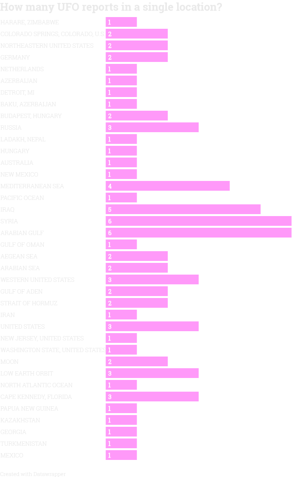
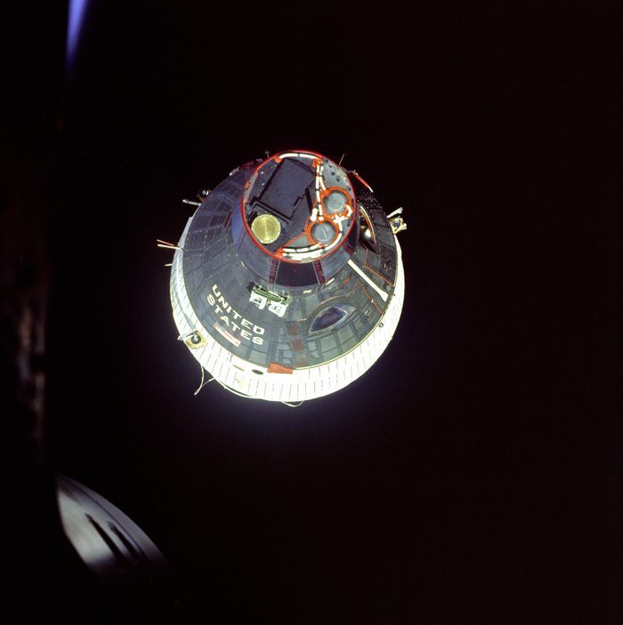

"What really happened in Roswell?", Barack Obama asked the crowd during the White House correspondents dinner in 2011.
The president was mocking potus-to-be, Donald Trump, who, in the months prior, had claimed that Barack Obama was born outside the United States.
As the birth certificate had finally been released by the state of Hawaii, "The Donald" could move on to more important questions, Obama joked.
Such as getting to the bottom of the infamous 1947 UFO incident in Roswell.
After an article in the New York Times in 2017, exposing a previously unknown U.S government program focused on gaining intelligence on UFOs, or UAP:s (unidentified anomalous phenomena), perception has changed radically from tin foil nut-crackery to serious debate.

And now, this spring, The Donald has taken Obama’s advice and declassified previously top-secret documents about the UFO-mystery.
Bill Nelson, former head of NASA.
This map contains the locations of the UFO incidents published on the Department of War’s website. The size of the UFOs on the map corresponds to the number of incidents in that location.

The incidents reported are from all over the world.
Such as this sighting, at Harare International Airport in Zimbabwe, in 2008
According to the newly released CIA memo, observers saw the object hovering over the airport for some time, with "beams" emanating from it.
Many of the sightings – 25 out of the 74 posted on the DOW's website – are in the middle east.
Like two separate sightings in 2020 by U.S military personel, only one month apart, in the straight of Hormuz.
Although the incident locations released by the Department of war are interesting, they don't necessarily prove a global alien diaspora. But at the very least they show a systematic and serious categorizing of UAP events by the U.S military all over the globe.
This video of a UAP was captured in the "Middle East" in 2013 by an infrared sensor aboard a U.S military platform, according to the United States government.
Many of the documents released do not have incident locations published directly on the Department of War's website but still have the locations unredacted inside the files. These files include sightings from the better half of the previous century until present, in places like Argentina, Holland, Madagascar, and Sweden.
Most interesting might not even be these incidents around the globe, though. Several of the incidents published actually happened… not on earth. Two were reported by astronauts from the moon.
And these three reports from Cape Kennedy in Florida were not sightings made from earth either. They are crew debriefings at the Kennedy Space Center with astronauts from the NASA Gemini space missions.
The conversation between astronaut Frank Borman, of Gemini mission 7, and ground control, was recorded and has been published alongside the documents.
Borman reports seeing a “bogey” – a pilot slang for unidentified aircraft – while in space.
Click the Gemini 7 space shuttle below to listen to the recording.
